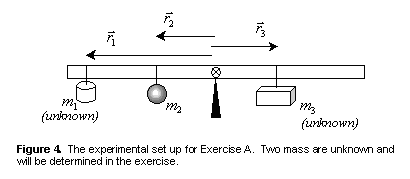
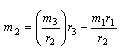
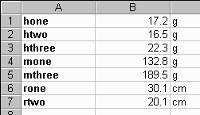
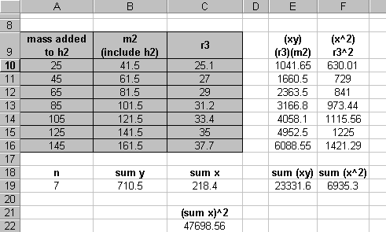
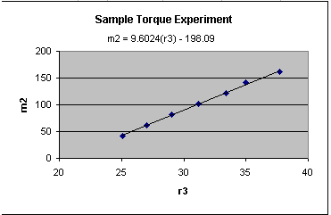
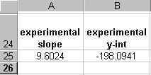
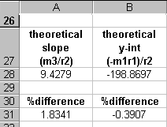
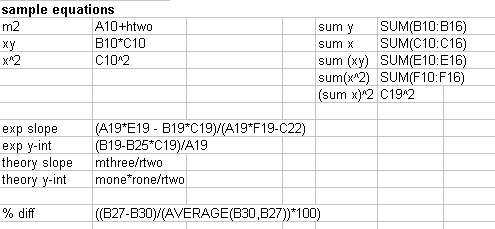

|
Lab 124 Torque |

|
Sample Data |

The above image shows the experimental setup of Exercise #1 of this experiment. We varied the mass of m2 and repositioned the third mass (r3) until static equilibrium was achieved. All other parameters were known.
This situation is governed by the following equation:

We recorded the increase of the mass of m2 and the magnitude of the position vector, r3. The recorded data was stored in an Excel spreadsheet. I defined the following constants (Insert >> Name >> Define) in the Excel application for to make my calculations easier. (hone, htwo and hthree are the mass of the clip hangers.)

The collected data is displayed in the gray cells below. The data in the unshaded cells is necessary for a linear regression analysis of the data. See my web page on linear regression for more information about this technique.

When the data is plotted using the Excel graphing program and a trendline is fit to the data, the following plot is returned:

When applying the linear regression treatment to the recorded data, we see that the slope and y-intercept as returned by the computer plotting program is identical to that of the linear regression treatment!
Surprise! Surprise! What does this tell you about the method the Excel graphing routine uses to compute the slope and y-intercept of a linear trendline?

When compared to the theoretical slope and y-intercept values (see equation at the top of this page), the experimental values were right on target!

Students should show their work, even when using a spreadsheet to perform their calculations. This way the lab instructor can determine where you are making your mistakes. To show your work, simply click on the cell containing the Excel formula. Then highlight and copy everything to the right of the equal sign. (Be sure to then hit enter to exit the cell otherwise you will change the formula!) Then paste the copied formula in a blank cell to show the TA which formulas you used. Below is an example of how I would have displayed the sample formulae.

If you have a question or comment, send an e-mail to
.
Copyright © 2000, Clemson University. All Rights Reserved.
This page was created by Chris D. Odom